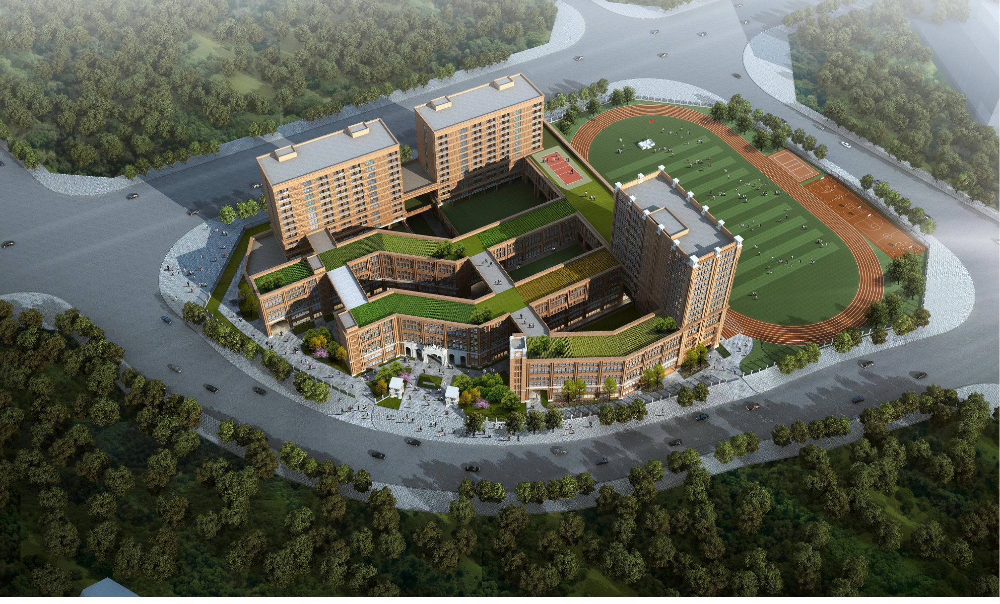
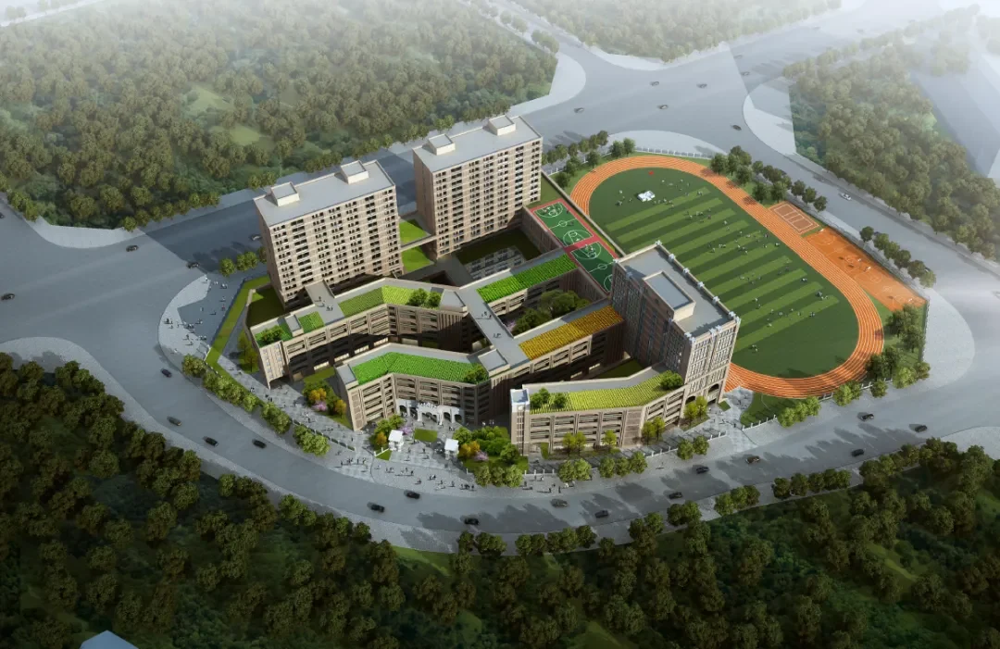
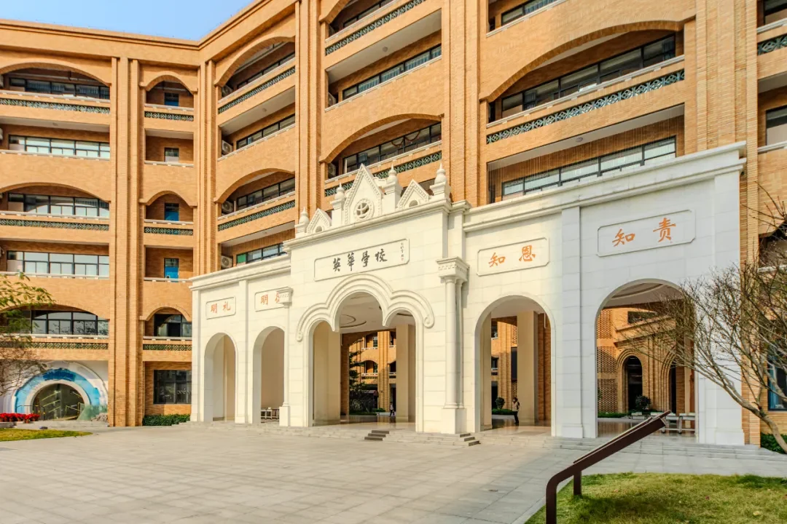

Read the constraints
A small site, high floor-area ratio and complex school programme set the starting conditions for the plan.



The Foshan Lecong Huaying New School proposal addressed a constrained urban site where teaching, dormitories, public facilities and sports had to work as one campus. The strategy held the programme together through a major axis, multiple courtyards and a sequence of primary and secondary plazas.
Instead of treating the school as a stack of isolated buildings, the scheme connected movement, outdoor space and operational systems. Three functional zones, separated flows and covered walkways make the campus legible at different speeds.
A small site, high floor-area ratio and complex school programme set the starting conditions for the plan.
Teaching, service and sports functions were arranged as connected zones rather than separate facilities.
Student, parent, teacher and logistics routes were coordinated with covered connections and a dedicated pick-up system.
3 pedestrian entrances
2 vehicle entrances
300 underground parking spaces
Landscape, daylight, building services and material decisions carried the campus strategy into implementation detail.
Huaying Eight Views
Daylight analysis
Facade material guidance
The functional strategy separates the campus into teaching, service and sports zones while keeping them connected through a clear internal structure. The main axis, multiple courtyards and primary and secondary plazas give a high-density programme a readable sequence.
The scheme accommodates a 96-class school with dormitory, dining, public learning and sports facilities. The sports programme includes a 400-metre track, an 11-a-side football field, basketball courts and volleyball courts.
The circulation strategy distinguishes students, parents, teachers and logistics without fragmenting the campus. Two vehicle entrances, three pedestrian entrances and a dedicated pick-up and drop-off zone make arrival easier to manage.
Covered walkways extend across the campus so that everyday movement is protected from the weather. Below ground, a 20,700 sqm garage provides 300 parking spaces, including 60 electric-vehicle spaces.
The campus structure is experienced through a sequence of courtyards, roof gardens, covered edges and open sports fields. The landscape concept develops these spaces as the Huaying Eight Views, giving the school a recognisable identity beyond its building blocks.
Courts and walkways provide smaller places for pause and informal exchange, while the track, football field and courts form a larger collective ground for activity and gathering.
Later design studies tested how the school could remain comfortable, safe and buildable at its full density. Daylight analysis, multi-zone air-conditioning, fire access and facade material guidance translated the spatial framework into technical decisions.
The material direction combines beige antique tile, white stone trim and grey metal frames, giving the school a calm institutional identity while keeping the elevations legible at different scales.
The project record below keeps the school programme, movement strategy and design development visible as one connected process. It distinguishes the supplied project evidence from claims about later implementation.
The supplied design document records a 96-class boarding school with separated teaching, public learning, living and sports systems. The portfolio reading focuses on how those requirements were translated into a legible campus structure rather than presenting unverified construction or post-occupancy outcomes.
Contribution is framed at the project-process level: interpreting constraints, organizing the campus system and developing the movement, landscape and technical evidence shown on this page.
Source document dated 2020.11; later page metadata remains a working portfolio draft.The diagrams and renderings on this page are extracted from the supplied Foshan Lecong Huaying New School project document. Captions have been translated and edited for portfolio reading; final project dates and individual image credits can be refined when the formal credit sheet is confirmed.
Back to top ↑